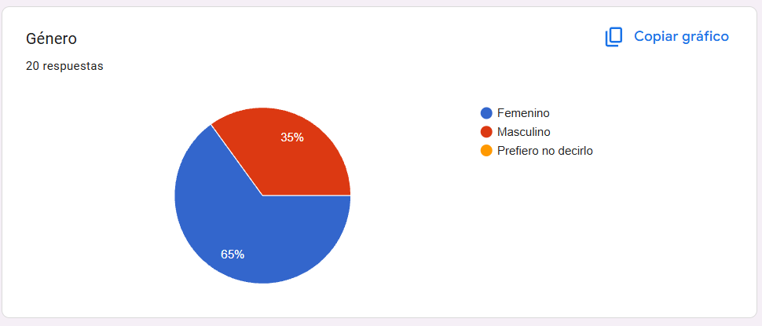
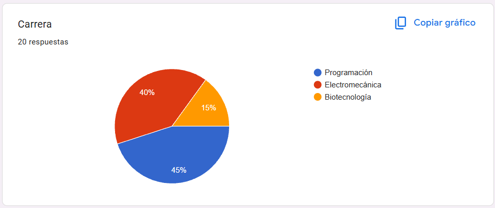
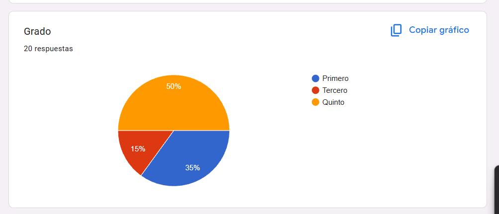
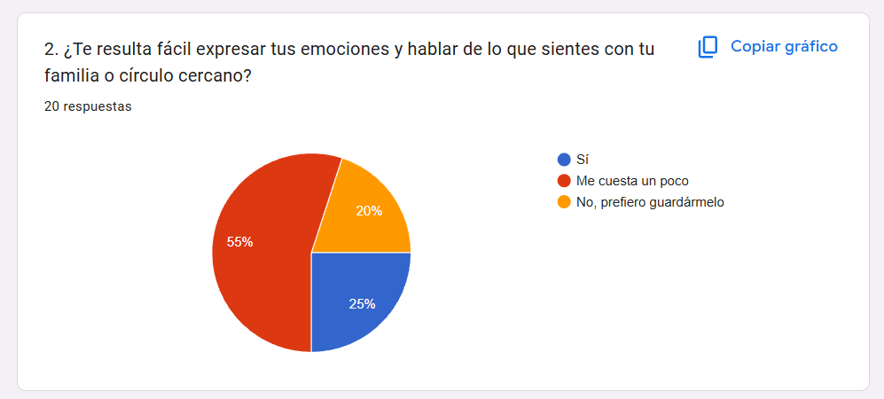
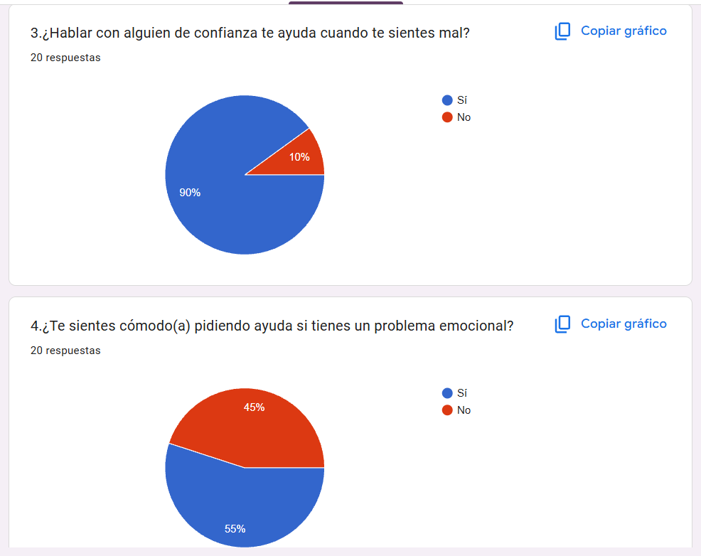
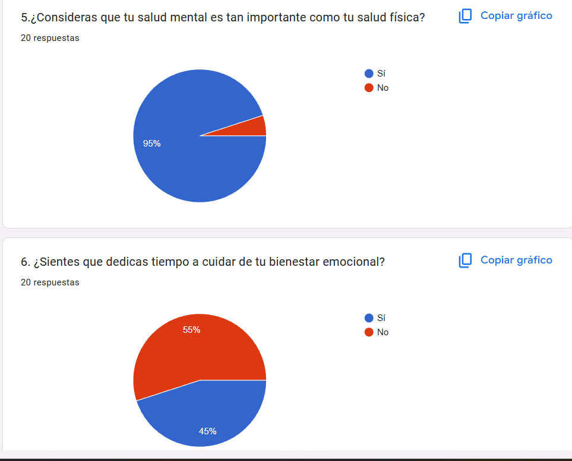
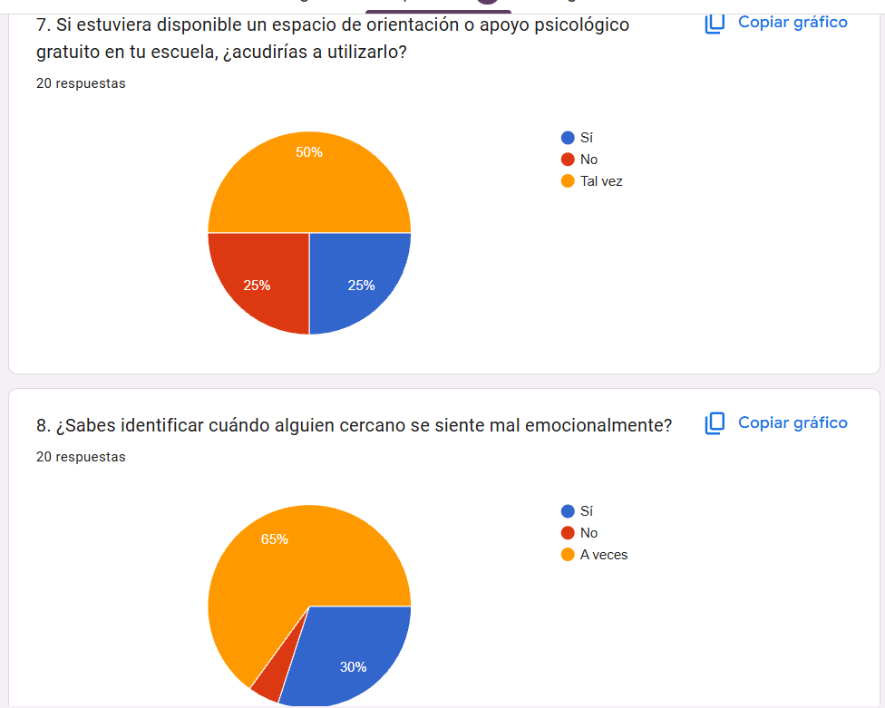
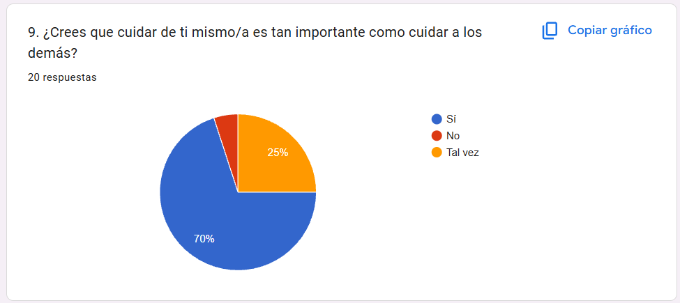
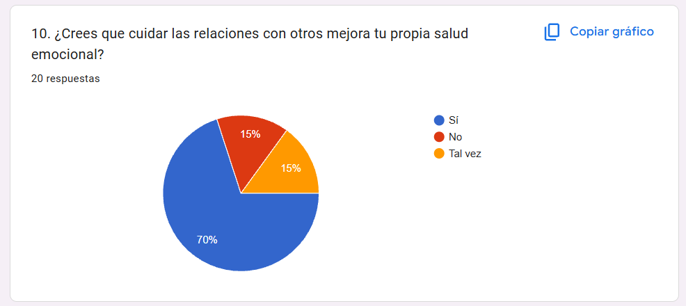

❝En este espacio promovemos la importancia de cuidarnos y cuidar a otras personas, mediante el ABC de las emociones. Nuestro propósito es crear conciencia sobre el bienestar emocional, fomentar la empatía, el respeto y la solidaridad, así como brindar información que ayude a reconocer la importancia de nuestras emociones y las de quienes nos rodean. A través de videos, consejos y materiales informativos dirigidos a adolescentes, padres de familia y maestros, buscamos fortalecer una cultura de apoyo, comprensión y cuidado mutuo, recordando que todos podemos contribuir a crear entornos más seguros y saludables.❞
❝ Nuestro proyecto se llama ABC de las Emociones y trata de cuidarnos y cuidar a otros.Hicimos una encuesta a adolescentes para saber cómo se sienten realmente. Ahora les mostramos las gráficas con los resultados.❞








